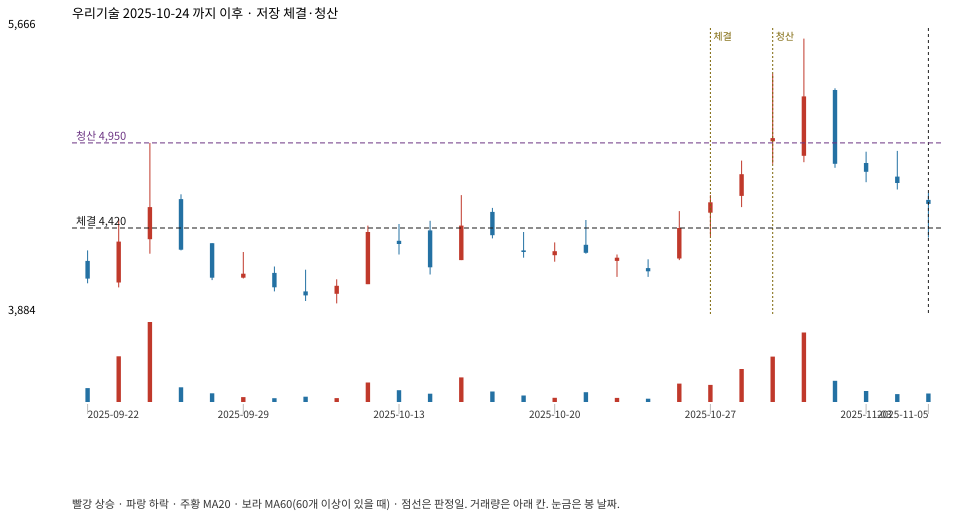

계좌를 다시 돌리지 않았다. 아래는 저장된 주문·체결·청산·비용·손익이다.

{
"case_id": "1315d93f9f8b8e13",
"status": "closed",
"trade": {
"symbol": "032820.KQ",
"signal_date": "2025-10-24",
"quantity": 26,
"entry": 4420,
"stop": 4069,
"target": 4950,
"planned_risk": 9399.558102999976,
"reserved_cash": 115034.91999999998,
"fill": {
"date": "2025-10-27",
"price": 4420,
"fee": 114.92
},
"exit": {
"date": "2025-10-29",
"price": 4950,
"reason": "target",
"net_pnl": 13536.38000000002,
"ambiguous_bar": false
}
},
"cost": "research fee 10bp each side, slippage 5bp; amounts below are the stored ledger, not a new run",
"chart": "c\/1315d93f9f8b8e13.svg"
}